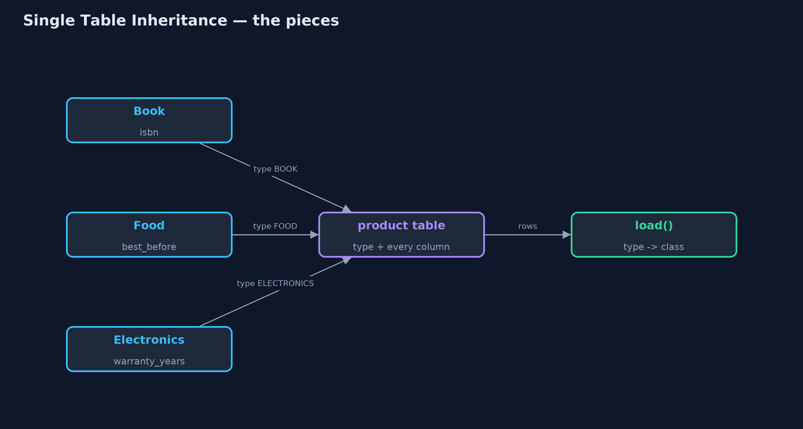
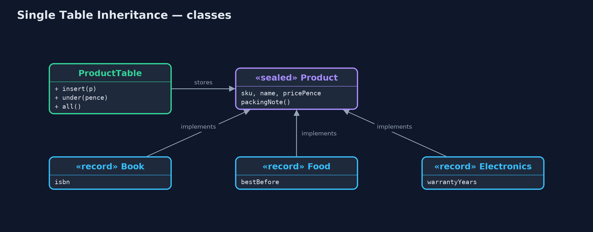
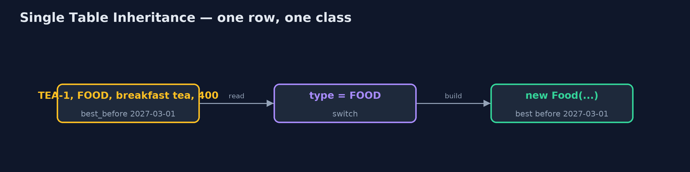
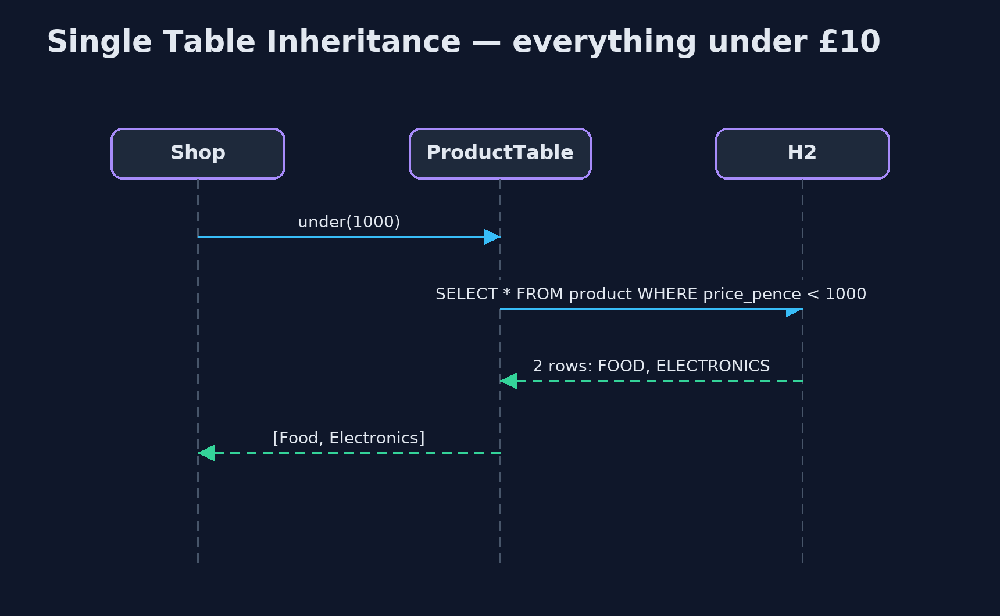

Single Table Inheritance Pattern
src/main/java/com/jk/explore/singletable/
├── ProductTable.java The pattern: every product type in one table, with a type column saying which class each row becomes
├── Products.java The shop's product types
├── SingleTableDemo.java The five acts: a table per type, one table for all, each row becoming its own class, a new type, and the bill
└── TablePerType.java Without the pattern: one table per product type, so a question about all products asks every tableStore every subclass in one table, with a type column that says which class each row becomes, and leave the columns another type needs empty.
Single Table Inheritance is one of Martin Fowler's enterprise application patterns for storing a class hierarchy in a relational database. Every subclass (book, food, electronics) is stored in the same table. A type column says which class each row is, and there is a column for every field any subclass has; a row simply leaves empty the columns that do not apply to it.
A question about all products is one query on one table, and each row is turned back into the right class when it is loaded. The price is empty cells, and rules the database can no longer enforce.
The idea in everyday terms
Think of one travel expenses form used for every kind of trip. It has a section for car journeys (miles driven), one for trains (ticket number) and one for flights (flight code). You fill in the section for your trip and leave the others blank. The finance team keeps one pile of forms, and a stamp in the corner says which kind each one is.
The scenario
The online store sells books, food and electronics. Each shares a code, a name and a price, and each has one field of its own: an ISBN, a best-before date, a warranty. They were stored in one table per type, so any question about all products, such as "everything under £10", had to ask every table.
Run
./gradlew runThe demo tells the story in 5 acts, each printing exact numbers that the tests check:
| Act | What it shows |
|---|---|
| 1. A table per type | Everything under £10 needs 3 queries, one per table: breakfast tea and a desk lamp. |
| 2. One table for all | One product table with a type column: everything under £10 is 1 query. |
| 3. Each row becomes its own class | Loading reads the type column: BOOK-1 becomes a Book, KETTLE-1 an Electronics, TEA-1 a Food, each with its own packing note. |
| 4. A new type | Gift cards need one class and one new column, value_pence; existing rows are untouched. |
| 5. The bill | 15 of 20 type-specific cells are empty; a book without an ISBN is saved because the column cannot be NOT NULL. |
Test
./gradlew test7 tests in DemoRunsTest, ProductTableTest. Every number the demo prints is asserted, and nothing depends on the clock, so every run gives the same result.
Technologies and versions
| Technology | Version | Used for |
|---|---|---|
| Java | 21 | the code (toolchain set in build.gradle) |
| Gradle | 9.2.1 (wrapper) | build and run, nothing to install |
| JUnit | 5.10.2 | the tests |
| H2 Database | 2.5.252 | an in-memory SQL database, so the demo runs real SQL with nothing installed |
| videokit | repository tool | the narrated video and animation: Piper en_US-amy-medium, speed 0.8, longer pauses (the approved amy-slow voice) |
Learning Material
| Document | What it is for |
|---|---|
| Problem statement | the situation and what the project must show |
| Prerequisites | what you need to know first |
| Single Table Inheritance, explained | the acts in prose |
| Session guide | a one-hour lesson with exercises |
| Animated walkthrough | the acts step by step, narrated |
| Spec | what this project must be true of |
The pattern in one picture
Many classes in, one table, many classes out.

Where each piece sits
A sealed interface with four records, stored by one class.

How the data moves
The type column decides.

Who calls whom, in order
One query, mixed types back.

Video
video/single-table-inheritance-pattern-explained.mp4 (with .m4a audio and .srt subtitles) is built by video/build_video.sh. Rendered media is not committed.
What it costs
- Empty cells. Every row leaves most type-specific columns empty: 15 of 20 in the demo.
- Weaker rules. A book's ISBN cannot be
NOT NULL, because food and kettles leave that column empty; the database accepts a book without one. - One wide table. Every new type adds columns everyone else carries.
When this is too much
When subclasses differ a lot, with many fields of their own, the table fills with empty columns; Class Table Inheritance (a table per class, joined) or Concrete Table Inheritance (a full table per concrete class) fit better. And when types are rarely queried together, separate tables are simpler.
Where you have already met this
- JPA's
@Inheritance(strategy = SINGLE_TABLE)with@DiscriminatorColumn. - Ruby on Rails'
typecolumn on ActiveRecord models. - Product tables in shop platforms with a
product_typecolumn.
Where this sits
This project is in enterprise-design-patterns, next to Table Data Gateway, which is the simplest way to put a table's SQL in one place.